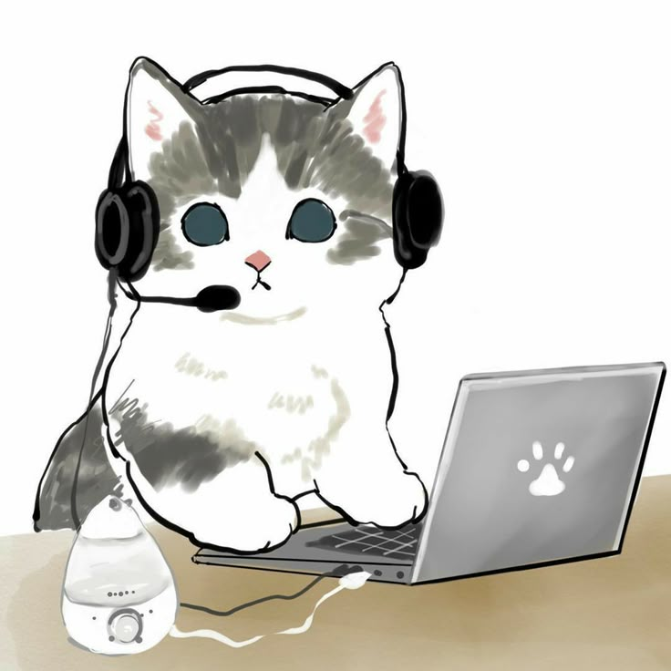
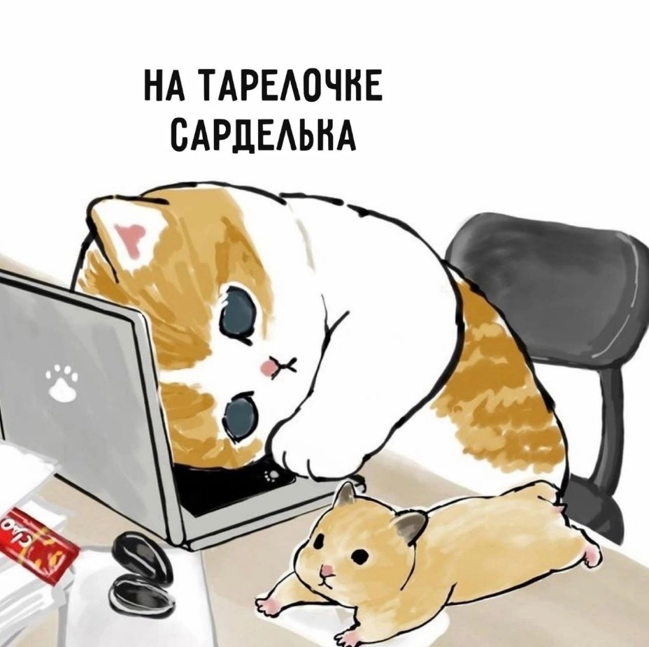
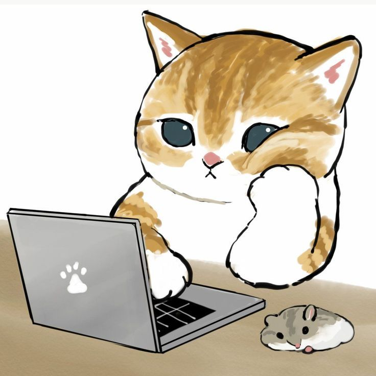
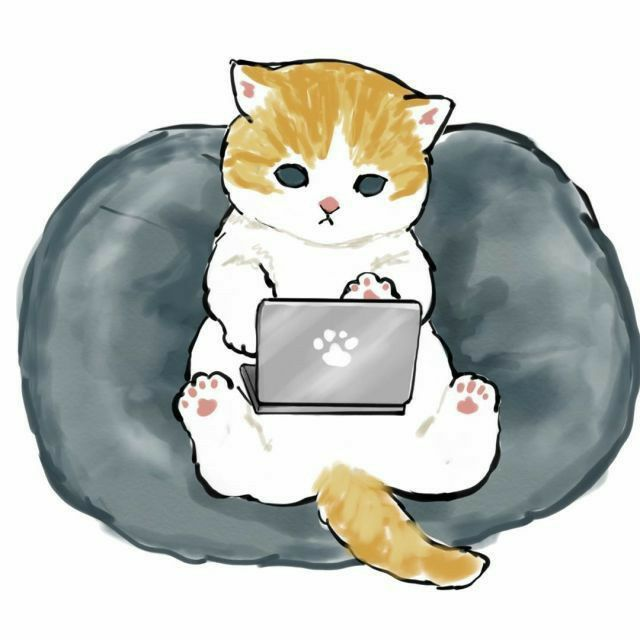
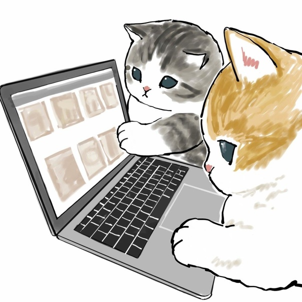
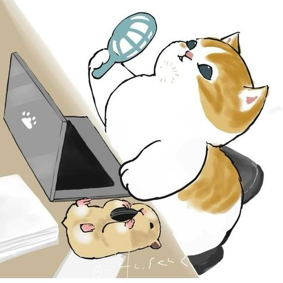
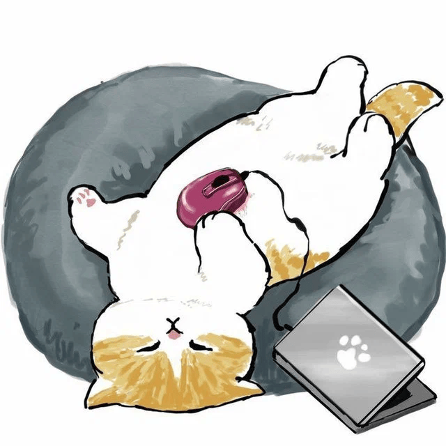
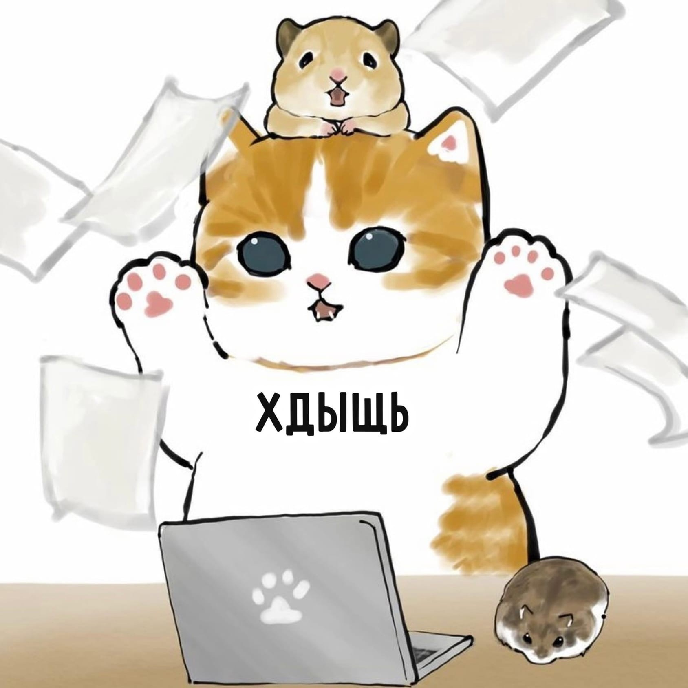

Фритрек и нулевой спринт: Подготовка к работе

Интригующе
Это было самое начало пути. На этом этапе важно было проникнуться основами и настроиться на учёбу.
И, возможно, подумать, как новые знания могут повлиять на ваше будущее.
Столько новой и интересной информации. Волнительное ожидание в предвкушении постижения новой профессии.
1 спринт: Я — чистый лист

Сложно
На первых этапах мы работали со страхами и сомнениями, которые часто испытывают новички. Один из них — страх перед чистым листом.
Это, конечно же, намного сложнее, чем боязнь куска бумаги. Часто за этим ощущением скрываются более глубокие вопросы: с чего начать?
а вдруг будет слишком сложно? что, если я не справлюсь?
Главное начать! Обычно в первый вечер с проектной работой почти ничего не понятно, сложно составить конкретный план действий,
но на следующий день уже есть и идеи и решения.
1 спринт: А если не получится?

Непостижимо
Первый проект — позади! Но это всё ещё самое начало пути. Радость могла быстро померкнуть и смениться ожиданием провала.
Или вы, наоборот, могли вдохновиться успехами и поверить в себя.
Это была маленькая победа, а впереди еще столько интересного. Такой большой объем информации, как же все запомнить?
2 спринт: Погоня за идеалом

Недостижимо
На этом этапе вы уже достаточно разбирались в основах вёрстки, чтобы понять, как много ещё впереди.
Вы могли попытаться погнаться за идеалом и понять, что он недостижим. А, может, вы вовсе и не подвержены перфекционизму
и вместо того, чтобы сделать идеально, старались просто сделать.
До идеала очень далеко, но стараться делать каждую работу лучше и качественней - хорошая цель.
2 спринт: О тех, кто рядом

Dream team
Всё это время вы были не одиноки (хотя, возможно, иногда и чувствовали, что одни против целого мира).
Вас окружали одногруппники, команда сопровождения и просто близкие люди, которым можно пожаловаться, если очередной макет
просто так не поддавался. Осваивать что-то новое легче, когда рядом есть единомышленники, не правда ли?
Групповой чат - это мощный инструмент поддержки и развития, место обмена впечатлениями и опытом.
Здесь можно не только всегда получить помощь, но и лучше усвоить материал, помогая другим.
3 спринт: Обходные стратегии

Эврика!
На этом курсе вы постоянно решали разные задачи. В какой-то момент вам могло показаться, что решения просто иссякли.
Значит, пришло время посмотреть на задачу под другим углом.
Зачастую задача имеет несколько способов решений. Если выбранный способ не очень подходит, то время освежить знания,
углубиться в конспекты или поискать информацию в других источниках. Больше всего мне нравится то чувство,
когда наконец-то находишь классное решение.
3 спринт: Когда опускаются руки

Перерыв
Во время учёбы часто возникает чувство, когда не знаешь, за что хвататься. Вроде и проектную пора сдавать, и задачи хочется порешать,
и в теории получше разобраться, и жизнь не забыть пожить. В такие моменты очень нужна концентрация. Вспомните, откуда вы её черпали.
Лучший способ собраться с мыслями - сделать перерыв.
Также можно переключиться на другую деятельность, чтобы набраться энергии и вдохновения.
«Сейчас я здесь»

Магия!
Сейчас вы уже очень много знаете о вёрстке. Но это только начало. Во-первых, впереди ещё много материала про «красотищу».
Во-вторых, с окончанием курса учёба не заканчивается. Вёрстка — это целый мир. И этот мир постоянно меняется.
Познать его полностью не получится, но это тот случай, когда важен сам процесс познания. Ведь часто путь — и есть результат.
Проделан долгий путь, хотя знания еще очень туманны, и нет уверенности, но я многому научилась. Уверенность приходит с опытом.